FM
03.0
MEMORY RADIO
030405
MEMORY RADIO · 记忆电台
一起
Together
和你一起，把普通的日子过成纪念日。
这一章没有大事，只有我们认真过过的普通日子。
FM 03.0 · AUTO PLAY · 2024—2026
NOW PLAYING 有点甜 · 汪苏泷 / BY2
LIVE
01 · THE CART
Little Escape
她每次逛超市，都想坐进购物车。这一次，我陪她任性了一把。
She always wanted a cart ride. This time, I said yes.
保存这张 Live Photo →
LIVE
02 · SOFT DAY
她的新朋友
沃尔玛的玩偶区一只超萌的海豚，不过好像还有更可爱的！
She asked if it looked like her. It didn't come home with us.
保存这张 Live Photo →03 · 一起的小家 1/2
两把牙刷，一碗葡萄。
家不是一间房子，是这些很小很小的事。
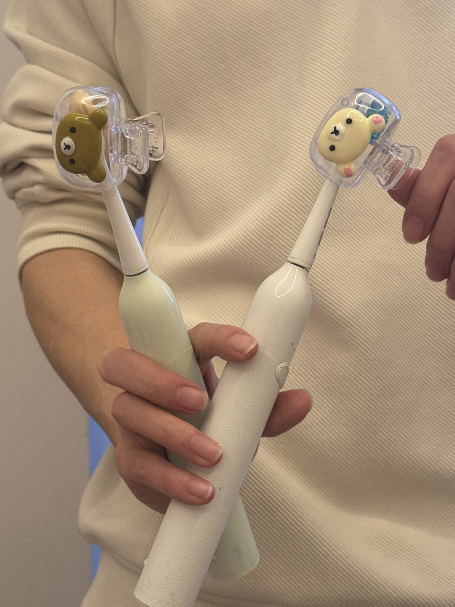
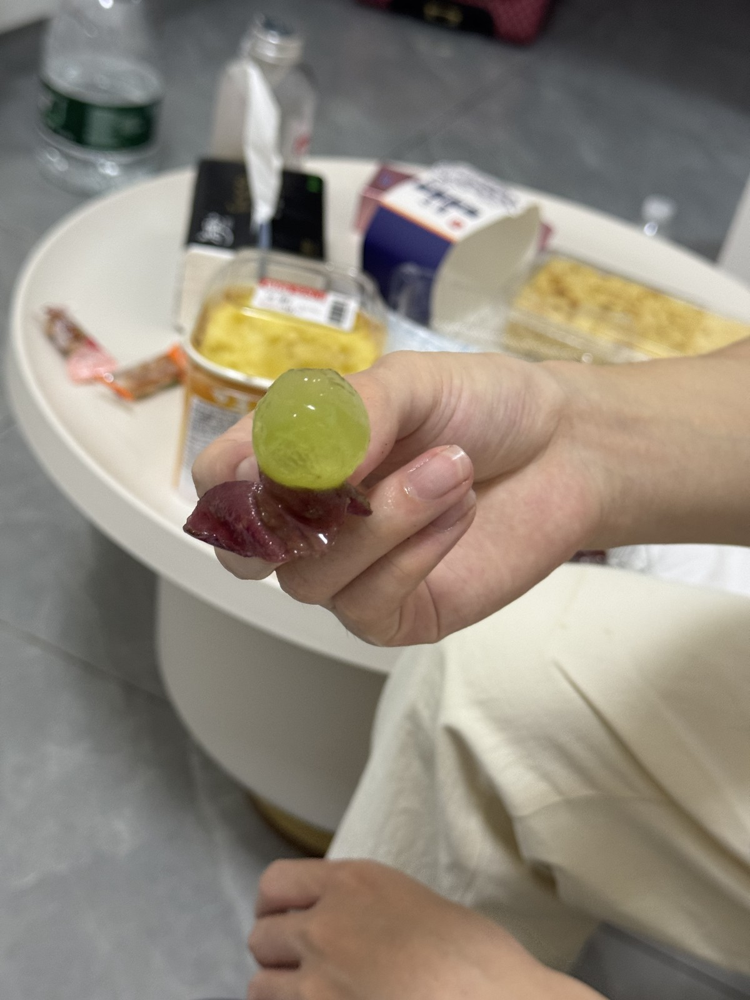
04 · 一起的小家 2/2
一桶泡面，一碗草莓。
Home is wherever you are.
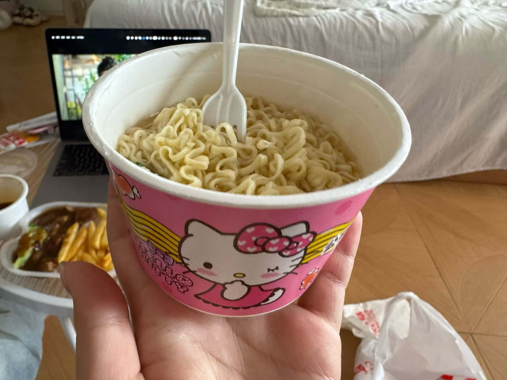
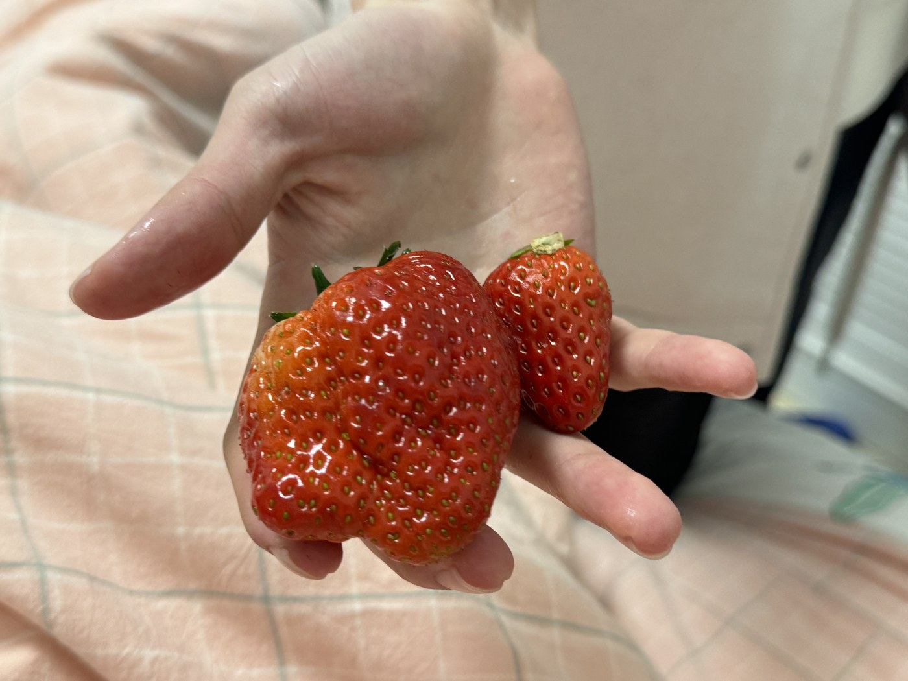
05 · 一起品尝美味
把好吃的，都分你一半
Good food tastes better with you.
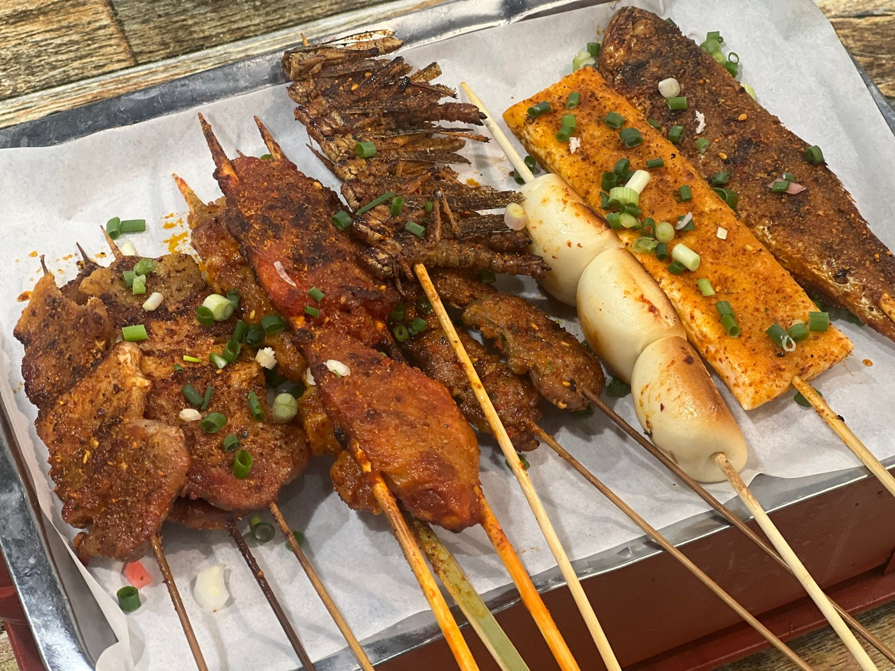
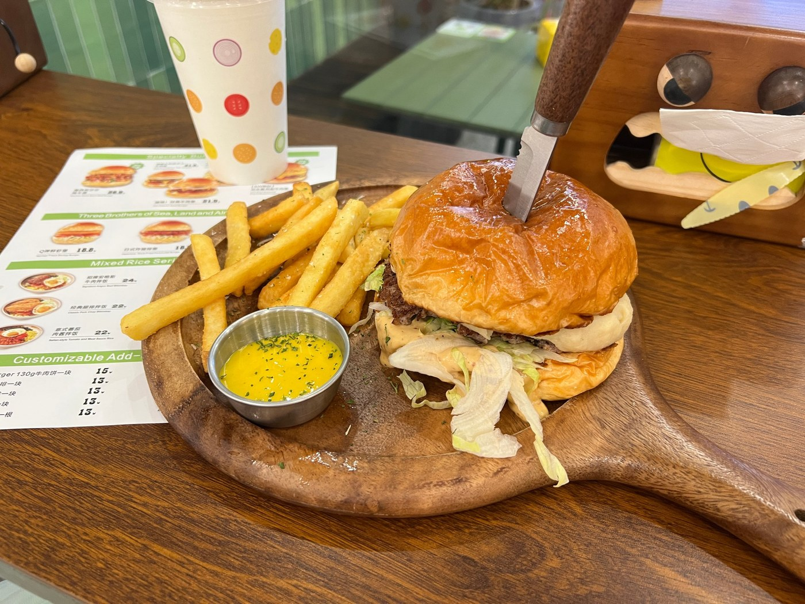
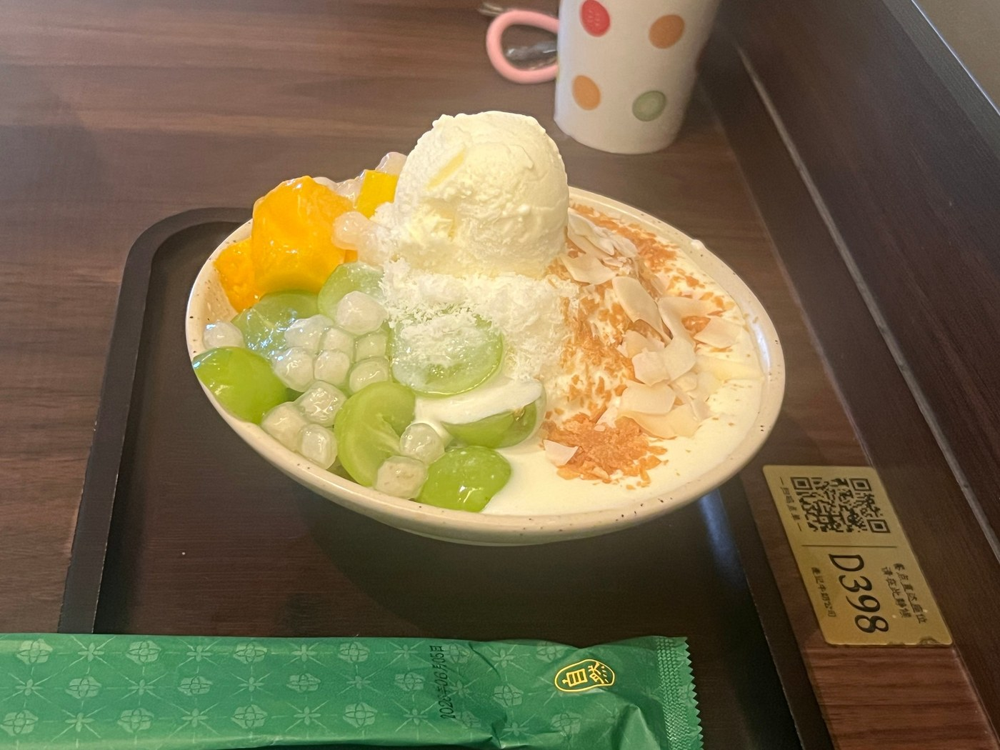
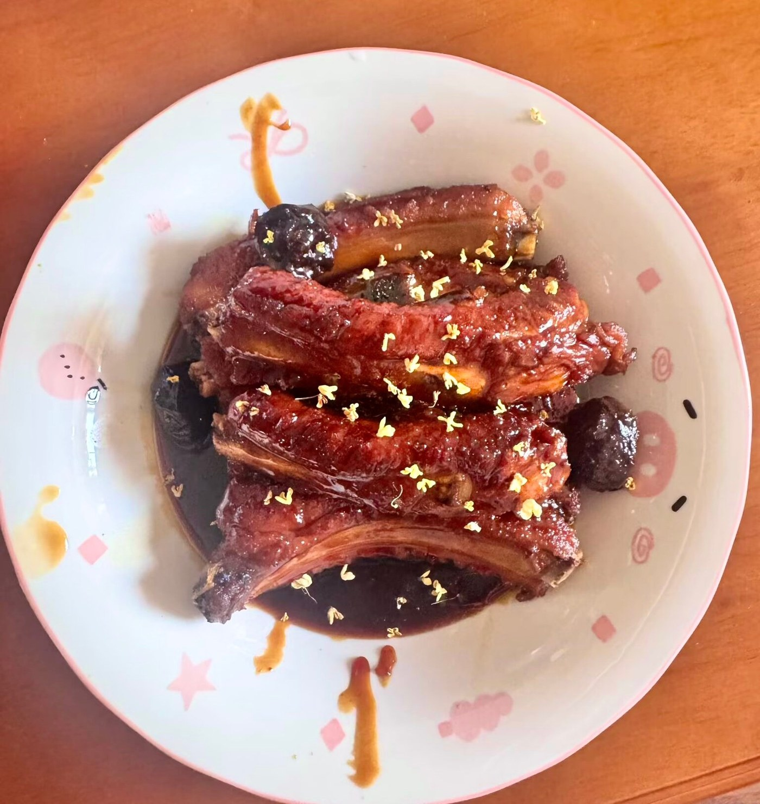
06 · THE RECIPE
要做一辈子的
糖醋排骨
要烹饪最好吃😋的糖醋排骨
我记住了。
A lifetime of sweet and sour.
家常菜 · 我们的以后07 · 一直守着你
今晚月色真美
给宝宝的小脚洗香香
I’ll keep watch, always.
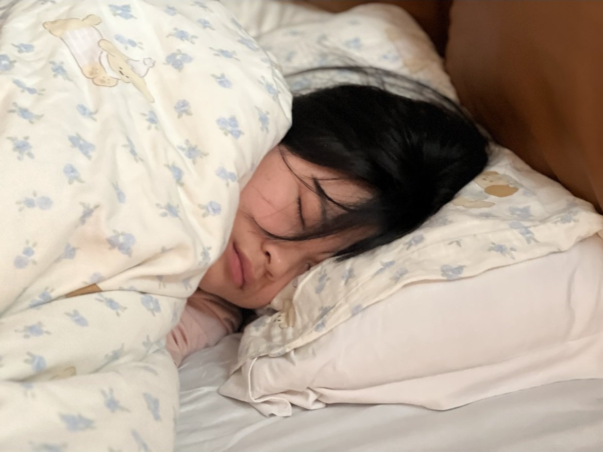
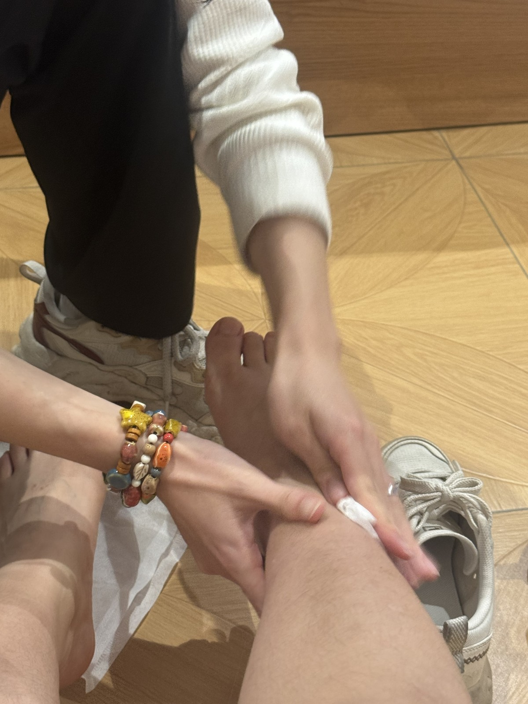
THE LAST PAGE
就这样，一直一起。
Together, for the long run.
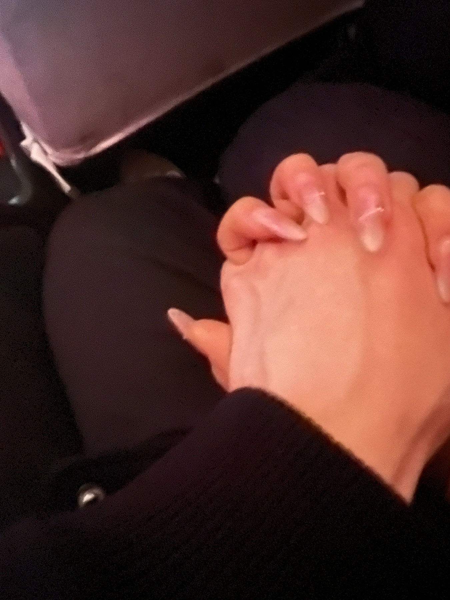
for you, always.
PROGRAM ENDS · 晚安